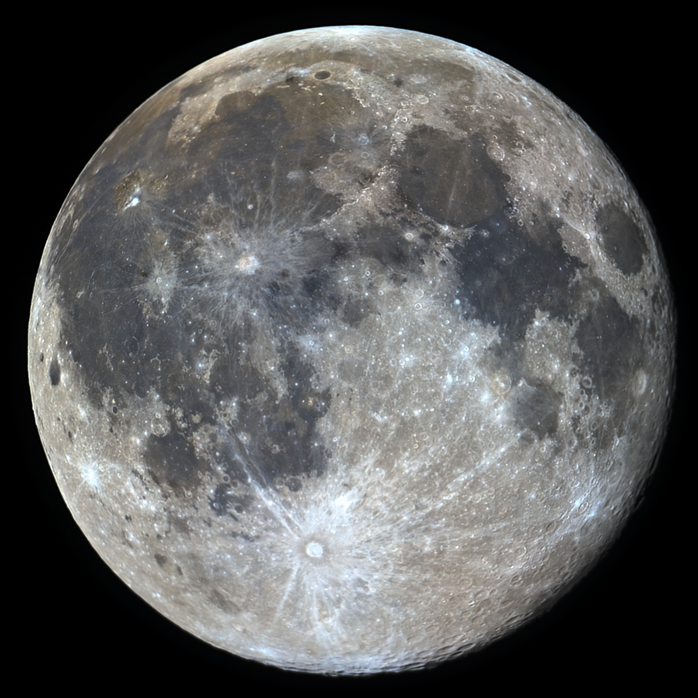
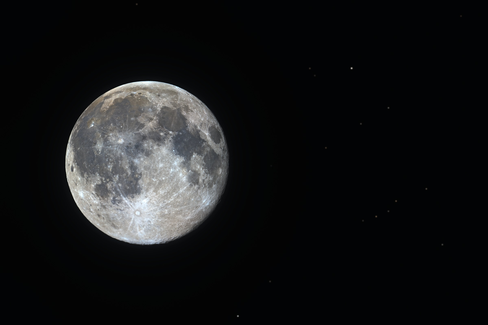

Sheet 03A · FTC-006Framing the Cosmos · Part 6
[Title to come]
Essay, first halfPaste from the notes doc when the text is ready.
Essay, second halfPaste from the notes doc. A pull quote fits in here once the speaker is confirmed:
<blockquote class="pull"><p>“I see a white blob.”</p><footer>Name · At the eyepiece</footer></blockquote>

Closing paragraphsFrom the notes doc.
I made this with Claude, which helped process the images, edit the reels and organize the footage and notes. I wrote the text and checked the quotes.
Sheet RD-04P04 MosaicFTC-006
Image: Rami Daud
Kent State University Observatory · Observed Nov 24 2026 · Published [date]
Subscribe on Substack (opens in a new window)